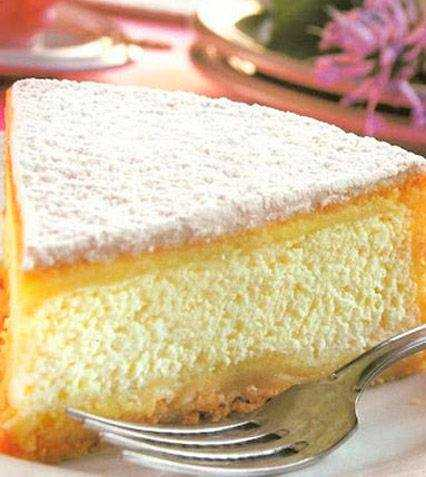
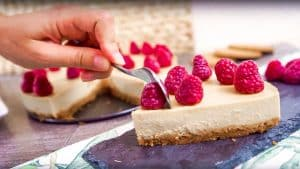

9 tartas fáciles. Tartas fáciles sin horno
 Recetas para bebés y niños Recetas para bebés Recetas para niños Recetas familiares Recetas para cenas rápidas Recetas para fiestas infantiles Menús semanales para niños Alimentacion para bebes y niños y alimentación infantil Concursos y Sorteos Recetas para bebés, niños y toda la familia Recetas Navidad Recetas Thermomix Suscribete al Newsletter
Fideos a la cazuela con costilla y salchichas (receta tradicional)
Tortitas de plátano (receta FÁCIL con 2 ingredientes)
Montadito de PRINGÁ (receta clásica del tapeo sevillano)
Lomo a la naranja (receta FÁCIL de lomo de cerdo en salsa)
Bica gallega (receta tradicional de bizcocho gallego)
PequeRecetas Recetas 9 tartas fáciles sin horno9 tartas fáciles sin horno
Pin It Por Pequerecetas | 28 votos CargandoHoy os traemos tartas fáciles de hacer y sin horno , y no os traemos una ni dos ¡sino 9 tartas fáciles ! Tarta de galletas con flan, tarta Oreo sin horno, una tarta fácil de queso, tarta de limón, tarta tres chocolates
La ventaja de estas tartas es que, al no necesitar horno no tenemos el inconveniente de que se haga bien el bizcocho, se nos quemen ni nada parecido Habitualmente estas tartas fáciles suelen llevar una base que puede ser de galletas machacadas y luego unos ingredientes (suelen llevar incluido flan o gelatina ) que al mezclarse y meterse en la nevera se quedan con suficiente consistencia para disfrutar de ellas.
Otra ventaja es que no llenan tanto como las tartas tradicionales, por lo que son ideales para finalizar una comida.
¿Queréis ver esas 9 tartas fáciles que os recomendamos? Para verlas sólo tenéis que pulsar sobre la imagen o el título y os llevará a la receta detallada ¡que las disfrutéis!
INDICE DE CONTENIDOS
Tarta de galletas con flan y chocolate Tarta fácil de queso Tarta de chocolate fácil sin horno Tarta de piña sin horno Tarta de galletas con chocolate Tarta Oreo sin horno Tarta fácil de limón Tarta Tres Chocolates sin horno Tarta de Kit-Kat gigante 4 tartas sin horno en 5 minutosTarta de galletas con flan y chocolate
Esta tarta de galletas con flan es la tradicional de toda la vida que hacían nuestras madres y que nosotros rescatamos para volver a hacérselas a nuestros hijos. Si quieres ver la receta solo tienes que pinchar en la imagen. Y si como a mí, te gusta más con crema pastelera, también tenemos la receta: tarta de la abuela de galletas
Tarta fácil de queso
Hay muchas recetas de tarta de queso pero esta es extremadamente fácil porque no lleva horno, lo que nos permite hacerla en apenas media hora. ¿Queréis probarla? La receta la veréis pinchando en la imagen.
Tarta de chocolate fácil sin horno
¡Qué tarta de chocolate más rica y fácil de hacer! Si sois golosos no dejéis de probarla porque os encantará
Tarta de piña sin horno
Esta t arta de piña es muy refrescante y muy agradable para tomarla después de cualquier comida familiar ¡ya nos contaréis si os gusta! Recordad que todas las recetas podéis verlas si pulsáis sobre la imagen o el título.
Tarta de galletas con chocolate
Otra tarta de galletas , esta vez es una tarta de galletas típica de Alemania que se prepara con chocolate ¡deliciosa!
Tarta Oreo sin horno
Una tarta Oreo sin horno ¿no suena deliciosa la idea? Pues seguro que os sabe aún mejor Para ver la receta solo tenéis que pulsar sobre la imagen.
Tarta fácil de limón
Otra opción refrescante para después de comer es esta tarta de limón ¡veréis qué rica! Pulsa en la imagen para ver la receta.
Tarta Tres Chocolates sin horno
¿Qué os voy a contar sobre la tarta tres chocolates ? Es una tarta fácil de hacer y deliciosa, veréis cómo gusta a toda la familia
Tarta de Kit-Kat gigante
Dejamos para el final esta tarta de Kit-Kat gigante porque además de fácil esta tarta está crujiente y deliciosa ¿os animáis a hacerla? Podéis pinchar sobre la receta para verla.
4 tartas sin horno en 5 minutos
Para terminar, te dejamos nuestro vídeo con las recetas de 4 tartas sin horno deliciosas: en solo 5 minutos puedes ver cómo hacer una tarta de galletas, la tarta de yogur, la tarta oreo y la tarta 3 chocolates.
Suscríbete a nuestro canal de YouTube para no perderte nuestras nuevas recetas semanales.
76 comentarios sobre “9 tartas fáciles sin horno”
1
¡¡Me las pido todas!! con tu permiso,y poquito a poco las hare,tienen una pinta
fabulosa,¡¡mil gracias!!
Gracias , me habéis ayudado mucho , pues me gusta variar de postres , cada semana hago alguno .
Comentario de Asun 3
La realizare con mis hijos gracias por darme elementos para compartir con ellos en las tardes
Comentario de ligardan 4
Hola, gracias por este regalo, a mi tambien me gusta compartir la cocina con mis hijos y este tipo de recetas son geniales, divertidas y riesgo minimo. gracias
Comentario de Esther 5
me encanta que halla sitios asi y que podamos aprender de ellos gracias
Comentario de espe 6
me encantaron las recetas se ven todas deliciosas, las haré próximamente. gracias
Comentario de anabelle mora 7
felicidades por los postres tan rapidos|||||||||||||,me los pondrias mandar a mi correo?,tus recetas me divierten muchiiiiisimo
Comentario de angels 8
muy buenas e interesantes
Comentario de fanny 9
Miles de gracias por compartir estas recetas
Comentario de nivea gonnzalez de mendoza 10
HOLA SE VEN FABULOSAS ESPERO HACERLAS PRONTO GRACIAS
Comentario de MARTHA ELENA 11
como puedo obtener sus recetas de antemano grcias
Comentario de MARTHA ELENA 12
Me han encantado esas recetas, gracias por compartirlas
Comentario de Anabel 13
TORTAS SE DICE NO TARTAS!!!
Comentario de juana de arco 14
Juana, en España se dice Tartas 😀
Comentario de Jelen 15
delicciooosas recomendadas!
Comentario de johana 16
me pueden dar la receta de la tarta de piña y Tarta Tres Chocolates sin horno y tambn
Tarta Oreo sin horno
Gracias!!! Me han ayudado a animarme a realizar postres ya que son mis primeras experiencias!!!
Comentario de Lily 18
Tengo una pregunta:
Mi madre es alérgica al gluten y a la piña, yo soy alérgica al huevo.
Yo, por nuestro santo, quiero hacer una tarta sin que ella se de cuenta y no se cual hacer, porque mi madre es alérgica al gluten y a la piña, yo al huevo y mi hermano a la fresa. Quiero hacer una tarta que podamos comer todos.
También, la quiero hacer una fácil, porque a mi padre no se le da bien la cocina para ayudarme.
Si me puedes dar una respuesta rápida, mejor.
Necesito la respuesta antes del 23 de este mes.
Y gracias por todo. : )
que delicioso y e interesante 120
Comentario de -milusca 20
Estupendas ideas para compartir con los niños
Comentario de Virginia 21
pues se dice tarta porque se hacen con galletas y la torta con masa gracias yo kiero aprender hacer todas las tartas y tortas quiero ser como ustedes asi de experto
Comentario de sulema marin 22
Me gustari a hacer todas pero tengo un problema no se como poder copiar las recetas en mi ordenador.
Me prodriais ayudar.
GRACIAS
super todo
Comentario de gabiy 24
aqui en españa se dice tarta no torta
Comentario de carmen 25
Muchas gracias por compartir estos postres ..Deben estar deliciosos Me han venido geniales porque yo tengo el horno que no me funciona y ésto es ideal para mí ..Gracias de nuevo y felicidades por vuestra página .Me encanta .
Comentario de Marie Soleil 26
Muchas gracias por compartir, que delicia de tartas, las voy a hacer todas, me encanta esta página, gracias
Comentario de Eva 27
Se ven deliciosas, quiero recibir todas las recetas que tengan. Gracias
Comentario de Rosa Fernandez 28
me encantaron las 9 tartas,me gustaria obtener las recetas y gracias por compartirlas
Comentario de maria torres f 29
Son unas tartas Riquísimas y Fácil deshacer.
Comentario de PURI 30
holas muy buenas recetass
Comentario de vely 31
Hola , termino de hacer la tarta de piña esta muy muy buena , gracias por las recetas.
Comentario de paqui 32
Hola!!las recetas todas estupendas pero la que mas nos ha gustado ea la de tres chocolates .ya me tienen loca para que la haga de nuevo.
Comentario de thechris 33
tienen una pinta buenísima :voy a intentar fotocopiarlas.
Comentario de juana navarro 34
Uffffff acabó de hacer la primera y se me a quemadooooooooo ohhhhhh bueno baños a intentarlo otra vez jaaaaaaaaaaaa
Comentario de angela 35
Ya me salio creo q me a salio bien haber lo q si al principio da mucho olor a flan haber a q sabe
Comentario de angela 36
estan muy bien las tartas ,,,,,,me podrian mandar las recetas de varios postres
Comentario de diego ruiz arraez 37
Me gustaria saber si la nata para montar es la crema de leche que consigo en mi pais.
Comentario de amparo 38
Todas deliciosas tienen una pinta estupenda.Preparare la de queso .Gracias por compartir tanta delicias.
Comentario de AMPARO.ACEVEDO VEGA. 39
me puedas mandar las recetas a mi correo.
mil gracias
Comentario de rox 40
Que buena pinta todas me podrian pasar la receta de la de piña y la de chocolate y queso gracias
Comentario de francisca 41
Hola gracias por compartir estas exquisitas y fáciles recetas pronto las compartiré con mis hermanas y realizare con los niños
Suerte y gracias
estan riquisimas todas las recetas que nos hacen favor de mandar gracias por todo
Comentario de ARACELI GRIEGO SANCHEZ 43
me encantan , ademas no tener que usar horno , ya me gusta mas .
Comentario de maria del carmen 44
Hola, esta semana he ehcho la tarta de limon sin horno pero la gelatina no cuajó se quedó toda líquida y la tarta sabía demasiado ácida, ¿algún truco para que cuaje? gRACIAS
Comentario de SARA 45
muy lindas las recetas , sigan así !!!!!
Comentario de isabel 46
agradezco mucho sus recetas, empezarè a hacerlas para probarlas, un abrazo desde Cali, Colombia
Comentario de nelly 47
me en canto todas las recetas que estan hay siiiiiiisas
«ricas´´
Sara: la tarta de limon si no cuaja con gelatina prueva a ponerle un sobre de cuajada es mas preferible que la gelatina ya que cuaja mejor!!
Comentario de Angela 49
Las recetas que publicas son fantasticas y faciles de hacer. Me las podias enviar a mi correo? GRACIAS
Comentario de soledad 50
hola, me gusta mucho hacer postres ;me encanta
Comentario de Tania 51
la gelatina sin sabor o se coloca en agua un rato y luego se lleva al microondas un poquito, porque si no se calienta no cuaja o endurece la torta.
Comentario de esperanza 52
Tus respetas son fantásticas no se que aria cin ti me puedes enviar tus resetas al correo gracias
Comentario de yeimi 53
me gusta mucho la repostreria y mas los sin hornos
Comentario de euny cantillo zuñiga 54
estas recetas son faciles y muy ricas
Comentario de laura 55
Son expectaculares las resetas yo ago una diario para motivar a mis niños y sobretodo para sorpqrender a mi esposo tengo 1 semana q empese a haserlo estoy checando en todo y esto es genial sin su ayuda no podria si puedes mandame reetas ami correo mil gracias
Comentario de anahi garcia 56
hl como estas megusto mucho la torta grande de chocolate me puedes mandar mucha recetas al correo por fa te agra des comucho soi una aficionada de la rreposteria muchas gracias que DIOS te pague chaoooooooooooooooooooo
Comentario de sandra patricia amud moreno 57
Me gustaría saber q es la crema d natilla . será crema d leche? . muy buenas todad las recetas! !!
Comentario de lorena 58
que buena pagina
Comentario de kimberly natalia sepulbeda 59
estas recetas son muy ricas y de berda buenas si y de berda bien ricas ñan
Comentario de maria victoria 60
que ricas recetas y yo opino igual que Maria victoria son ricas ñan
Comentario de dalia zaray 61
Son fabulosas!! Gracias a esta entrada ya he salvado dos veces el cumpleaños de mi mejor amiga. No me gusta cocinar pero así me animo cuando la ocasión lo requiere. Gracias por hacerlo tan fácil!!!
Comentario de Teresa 62
mmmm todos estan faciles de preparar y riquisimos 🙂 🙂
Comentario de leyla 63
Tus postres se ven deliciosos espero poder hacerlos muy pronto felicidades.
Comentario de Carmi 64
Hola no consigo ver ninguna receta de las 9 tartas fáciles sin horno y estoy muy interesada.Me podéis ayudar?
Gracias
Pulsa en las fotos y te reenvía a la recetas
Comentario de Francis 66
Hola me gustaría las recetas de la trata de queso y piña gracias
Comentario de mireya 67
Hola, me llamo Karine y vivo en Francia.
Me gustaria tus recetas !!! ???
Puedes decirme donde vives ? À mi me encanta tu idioma. Muchas gracias
Entonces qedan como gelatina o estilo como brownie ( suave)
Comentario de Evelin Hernandez 69
Muy buen aporte. Espero me envíen ideas para poder realizarlas. ¡Besos!
Comentario de Sol ortega 70
Me gusta muchisimo su pagina de recetas me han ayudadao muchisimo
Sigan adelante
Gracias
Comentario de Maria del Carmen Valdivia Miron 71
Hola a todos.
Hice la tarta de piña ayer.. está de miedoooooooo.
La hice con la mitad de todo, porque sale una tarta enorme.
Buenísima, elegante, suave y esponjosa
Amenazo con hacer la de chocolate jejejej
Gracias por las recetas
Aqui en uruguay tarta es la q no lleva tapa superior sobre relleno ( ej de jamon y queso, zapallitos, quiche etc) las de mezcla sob tortas. Saludos
Comentario de Adriana 73
Desearia resivir en mi correo toda la variedad de recetas de todo sentido para realizarlas en casa
Comentario de Oscar 74
Q bueno saberlo!! Voy a preparar la entonces. Muchas gracias x las recetas, de ven deliciosas
Comentario de Giuliana 75
Que pintaza! Me los llevava todos en un termo para casa sin dudarlo! Gracias por el post
Comentario de Termospara 76
Que puedo hacer con arina de pan azucar y agua por fabor dame una respuesta rapida q estamos pasando por un periodo dificil por causa del coronavirus
Comentario de yrcaniaDeja un comentario Cancelar respuesta
Este sitio usa Akismet para reducir el spam. Aprende cómo se procesan los datos de tus comentarios .
Por edades
A partir de 6 meses A partir de 9 meses A partir de 1 año Recetas familiaresRecetas diarias
Menús semanales Desayunos Aperitivos y tapas Comidas Postres Meriendas Cenas rápidas BebidasRecetas especiales
Recetas para celiacos Recetas sin leche Recetas sin huevoPor ocasiones
Fiestas y cumpleaños Recetas de Carnaval Recetas de Navidad Recetas de HalloweenPor categoria
Arroz Carnes Cremas y Purés Dulces Ensaladas Frutas Huevos Legumbres Pan y masas Pasta Patatas Pescado Pollo Sandwiches Sopas Tartas VerdurasPor técnica
Thermomix Olla express Guisos MicroondasLo más buscado
Por categoría
Recetas de postres Recetas de pollo Recetas de arroz Recetas de ensaladas Recetas de pescado Recetas de bizcochosLas más buscadas
Crema de calabaza Pollo al horno Croquetas Crema de calabacin Albondigas en salsa Berenjenas rellenasCenas rápidas
Pastel de verduras Ensalada de pasta Hamburguesas caseras Ensaladilla rusa Macarrones con chorizo Tortilla de espinacasRepostería y dulces
Bizcocho de yogur Brownies Tarta de queso Bizcocho de chocolate Tarta de manzana Tarta tres chocolatesAlimentación
Quinoa Jengibre Semillas de Chía Kiwi Curcuma Maca andina @Copyright 2020, Kidealia Media SL Contacto Publicidad Política de Privacidad y Aviso Legal Política de Cookies Condiciones de uso